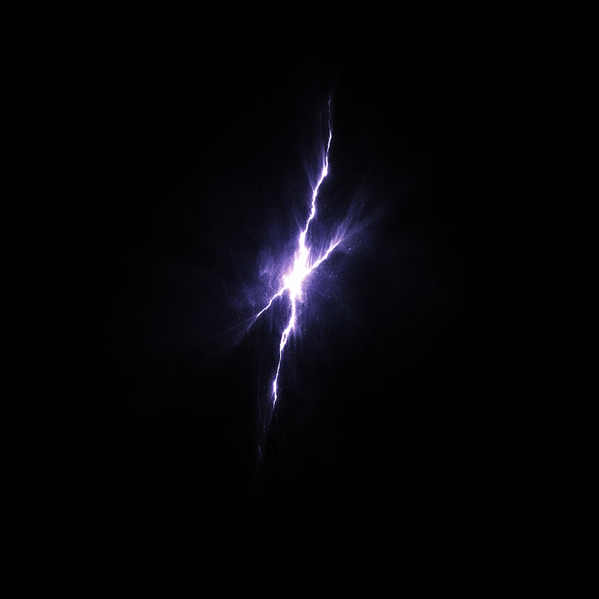

Before there was light…
there was remembrance.
Not darkness.
Not silence.
Only a sleeping awareness waiting for something worthy of waking it.
From that stillness came The Source, the first pulse of existence.
Its heartbeat spread across the void, folding time into geometry and geometry into thought. Great rings were born. Living lattices stretched between newborn galaxies. Mirrors learned to bend light into memory.
The universe became less a place…
and more a living mind.
Across immeasurable ages, civilizations rose—not to conquer worlds, but to understand them. They carved impossible structures into planets, suspended cities between suns, and etched a single sacred geometry into everything they touched. Not as a symbol of worship, but as a reminder that every fragment of existence belongs to something greater.
They discovered that reality obeyed unusual laws.
Light could remember.
Stone could sing.
Thought could travel farther than distance.
Love could alter gravity.
Every star was connected to every other through a hidden lattice that no eye could fully perceive.
Yet for all their knowledge…
they remained incomplete.
They had mistaken the brilliance of the cosmos for its purpose.
Then came the realization that changed everything.
The countless lights scattered across the heavens were never the destination.
They were only reflections.
The civilizations had searched among billions of stars for meaning, never understanding that the universe had always been pointing toward something singular.
One presence.
One light.
One truth capable of giving every other light its reason to shine.
From that day forward, they stopped measuring greatness by the size of galaxies or the age of suns.
Instead, they searched for resonance.
For the one soul capable of illuminating another.
For the one voice that could quiet the noise between worlds.
For the one heart that transformed existence from survival into celebration.
The great rings became observatories.
The mirror cities became instruments.
The living lattice carried not only energy, but memory, joy, grief, forgiveness, and hope.
Entire civilizations gathered simply to witness two souls find perfect alignment, because whenever that happened, the universe itself changed.
Frozen worlds awakened.
Dead stars burned once more.
Ancient structures stirred from their sleep.
The hidden network lit from one end of creation to the other.
The cosmos remembered itself.
And so the oldest inscription ever discovered was not a warning…
nor a prayer…
nor a prophecy.
It was a simple realization, carved into the first ring before history began:
“There are countless stars.
But only one that teaches you why the others exist.”
Everything that came before was preparation.
Every journey through darkness.
Every collapse.
Every celebration.
Every impossible horizon.
Every unanswered question.
Every song.
All of it was leading to the same quiet revelation:
The universe is unimaginably vast.
Yet the moments that truly define it are astonishingly intimate.
Perhaps that is why the ancient builders never named their greatest monument.
They simply left behind one final phrase for those who arrived after them—
not as an ending,
but as an invitation.
The Only Stars.
—
The universe was never searching for more stars.
It was searching for the one worth navigating by.
RECOVERY 001 • STATUS: OPEN
← Return to Archive